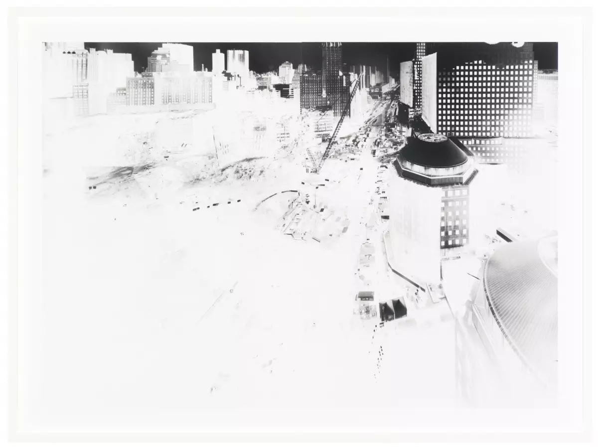

Vera Lutter, Study for Ground Zero I, November 1–5, 2001, 2001. Gelatin silver print; framed: 29 x 33 x 2 in. (73.3 x 83.8 x 5.1 cm). Collection Museum of Contemporary Art Chicago, gift of Francis Dittmer, 2009.11.a. © 2001 Vera Lutter